От сердца к сердцу
Без всякого преувеличения так можно было бы назвать юбилейное торжество, посвящённое 70-летию Тарусского
дома-интерната для престарелых и инвалидов, состоявшееся в конце минувшей недели.
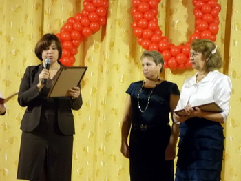
Такого грандиозного праздника это скромное во все времена учреждение ещё не знало. Предшествующая подготовка
была не менее грандиозной. Впрочем, готовились здесь не столько к празднику, сколько к дальнейшей нормальной
и достойной человеческой жизни. И люди это хорошо чувствовали – проживающие, персонал, изо всех сил помогая
во всём руководству. Поэтому в волнующий и долгожданный день своего 70-летия Тарусский дом-интернат предстал
перед многочисленными гостями возрождённым – сверкающим чистотой, новизной, уютом. И – улыбками обитателей
этого дома, что, наверно, важнее всего остального.
Большой актовый зал, также до неузнаваемости похорошевший, был переполнен до отказа. Места здесь, похоже,
занимались сразу после завтрака. Музыка звучала уже на входе в дом-интернат, где гостей встречали три
девицы-красавицы (не приглашённые, из местных) в ярких, расшитых узорами сарафанах и кокошниках. Данная
ответственная миссия для интернатовских девчонок, судя по их счастливым лицам, была настоящим эмоциональным
потрясением. Впрочем, как и для многих обеспечиваемых. Но насыщенный чудесами день ещё только
начинался!..
И вот, наконец, звучат фанфары, возвещающие о начале торжества. Праздничную программу открывает танцевальный
коллектив Полотняно-Заводского детского дома (Дзержинский район). Он же будет и дальше украшать её своими
номерами, создавая хорошее настроение всем присутствующим.
Ведущие программы К.А. Мавлютов, гл. врач дома-интерната, и К.М. Теммер, психолог, начали её с адресного
приветствия людей, проживающих в социальном учреждении более четверти века. Это Р.П. Рыжикова ( о ней наша
газета уже писала), поступившая сюда в ноябре 1946 года, Е.М. Леонов и А.И. Родионов (живут в доме-интернате
с сентября 1960 г.), Н.С. Герасина и П.В. Афанасьева (с 1979 г.), В.В. Громаков, Н.П. Смирнов, В.И.
Паршуков, М.Г. Волкова, Б.В. Волков, Н.Н. Аверичев, Д.В. Ищенко, Д.С. Лифанов (с 1984-88 г.г.). И семейных
пар – М.Г. и Б.В. Волковых, скрепивших брак в 1986 году в стенах дома-интерната и отметивших в прошлом году
серебряную свадьбу; В.П. и М.Т. Смирновых, проживших в браке 61 год (!); В.П. и С.Н. Юшиных, Р.Т.
Курнявцевой и П.В. Сковородкина, зарегистрировавших брак в 2011 году.
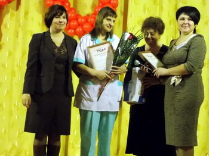
С приветственными словами к хозяевам и гостям дома-интерната обратились: Т.В. Романова, заместитель министра
по делам семьи и демографической политике Калужской области; В.И. Чигищев, депутат Законодательного Собрания
Калужской области; Е.М. Мальцев, глава администрации МР «Тарусский район»; О.Э. Ленц, заместитель главы по
социальным вопросам администрации МР «Тарусский район»; Н.Ф. Миронова, глава администрации СП «Село
Кузьмищево»; отец Леонид, протоиерей храма Воскресения Христова; Ю.В. Макеров, заместитель главы
администрации ГП «Город Таруса». Все они, прежде всего, отметили произошедшие за последние два года
колоссальные сдвиги в укреплении материально-технической базы Тарусского дома-интерната, существенное
изменение условий проживания обеспечиваемых и работы персонала, ставшие возможными, прежде всего, благодаря
энергичному и умелому руководству директора Л.Е. Стародубцевой, её неравнодушию и целеустремлённости. Не был
оставлен без внимания и огромный вклад в общее дело предыдущего руководителя дома-интерната Р.А. Лаптевой,
для которой многолетний труд во благо одиноких, старых, больных людей стал делом жизни.
Глава администрации района Е.М. Мальцев, передавший также поздравления по случаю юбилея от министра
конкурентной политики и тарифов Калужской области Н.В. Владимирова, выразил это простыми, но очень
проникновенными словами: «Спасибо вам за то, что согреваете своим теплом и заботой тех, кто в этом более
всего нуждается. Пусть не иссякнет источник вашей доброты!»
В.И. Чигищев зачитал приветственный адрес по случаю юбилея от председателя Законодательного Собрания области
В.С. Бабурина.
Как всегда по случаю юбилейных торжеств, процесс награждения самых достойных – за добросовестный труд в сфере
социального обслуживания престарелых и инвалидов – занял достаточно много времени. Времени, замечать
которое, кажется, не хотел никто, ведь минуты радости – как за себя, так и за других – всегда кажутся
слишком короткими. Но за этими минутами – дни, месяцы, годы напряжённого и очень непростого труда, как
физического, так и душевного.
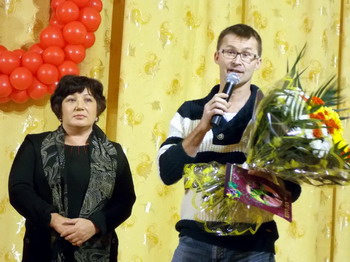
Самыми высокими наградами – Почётными грамотами и Благодарственными письмами Губернатора Калужской области
были отмечены – Н.Р. Петрович, техник дома-интерната; Е.А. Петрович, зав. промышленным складом; А.В.
Фирсова, бухгалтер; Л.А. Дубровская, зав. хозяйственной частью; Т.Д. Комарова, сестра-хозяйка.
Благодарственным письмом Губернатора Калужской области награждён до добросовестный труд в целом коллектив
ГБУ Калужской области «Тарусский дом-интернат для престарелых и инвалидов», а Почётной грамотой Губернатора
– за III место в областном конкурсе за звание «Лучшее учреждение социальной службы Калужской области по
содержанию и благоустройству среди учреждений для граждан пожилого возраста и инвалидов, в том числе
детей-инвалидов».
Почётных грамот и Благодарственных писем Министерства по делам семьи и демографической политике Калужской
области удостоены: Е.Н. Ануфриева и А.Н. Астахова, младшие медицинские сёстры по уходу за больными; С.В.
Дружинина, В.А. Кузнецова, И.А. Бекузина, З. А. Пашаева, медицинские сёстры; Т.В. Горячева, гл.
бухгалтер.
Почётные грамоты и Благодарственные письма администрации МР «Тарусский район» вручены: Л.Е. Стародубцевой,
директору Тарусского дома-интерната; В.К. Банниковой, бухгалтеру; Е.Е. Бычковой, экономисту; В.Н. Голышевой,
сестре-хозяйке; В.П. Дрёмину, водителю; В.Д. Ефремовой, специалисту по соцработе; Г.И. Казаковой, Л.А.
Сельдёвой, Е.В. Угольной, младшим медицинским сёстрам; Н.П. Фоменковой, сестре-хозяйке; О.В. Фирагиной,
оператору стиральных машин; М.Б. Швангерадзе, медицинской сестре.
Целый ряд сотрудников дома-интерната были награждены Почётными грамотами и благодарностями администрации
социального учреждения – за добросовестный труд, старание и усердие.
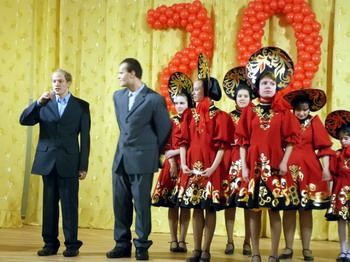
Сотрудников дома-интерната и всех проживающих с юбилеем также тепло поздравили: И.В. Олейникова, гл. врач
Тарусской ЦРБ; учащиеся Тарусского ПЛ-34 во главе с Г.А. Заболотиным, директором профлицея, и У.Л.
Голышевой, заместителем директора; учащиеся профлицея № 57 г. Протвино; М.А. Бочарова, заведующая отделением
социальной помощи на дому, Л.В. Шуклина и Йорг Дусс, члены попечительского совета при доме-интернате; М.
Костромина, представитель офиса «Таруса» ОАО «Газэнергобанк». А ещё сами проживающие – Н.Н. Рахимова и Р.Т.
Курнявцева.
Нельзя не сказать о замечательных подарках, преподнесенных дому-интернату по случаю юбилея. Самым весомым из
них был, конечно, областной, тот, что существенно повлиял на укрепление материально-технической базы
учреждения, – губернатор области А.Д. Артамонов с пониманием отнёсся ко всем обращениям администрации
дома-интерната, выделив за два года на его первостепенные нужды в общей сложности порядка 25 млн. рублей.
Районная администрация преподнесла в подарок микшерский пульт управления звуком для актового зала; СКБ КП
ИКИ РАН – беспроводной интернет (Vi-Fi); Фонд «Радуга тарусская» - два компьютера, четыре ноутбука и целую
гору сладостей (огромный торт и пирожные-сердечки, символизирующие любовь и добро); Л.В. Шуклина –
праздничный концерт группы «Орион» Калужской филармонии и летние прогулки на катере по Оке; офис «Таруса»
ОАО «Газэнергобанк» - вечерний фейерверк, восторженные впечатления от которого у обеспечиваемых наверняка
останутся надолго.
Чудесным финалом состоявшегося праздника стал юбилейный красавец-торт с семьюдесятью зажжёнными свечами. В
зале погас свет – и на мгновенье мир погрузился в сказку. Ту самую, которая так необходима хотя бы изредка
всем нам. Но одиноким, старым и больным людям – в первую очередь. Обед за празднично накрытыми столами…
Концерт, ставший одновременно зажигательной дискотекой (молодёжь веселилась по полной). А ровно в шесть
часов вечера в небе над домом-интернатом взметнулись ввысь во всём великолепии разноцветные огни, рассыпаясь
тысячами сверкающих брызг. Без малого три сотни восторженных глаз прильнули к окнам, чтобы вдоволь
насладиться красивейшим зрелищем. Возможно, кто-то из проживающих здесь увидел его впервые в жизни.
Информация предоставлена редакцией районной газеты "Октябрь"
Статья и фото - З. Виноградова

 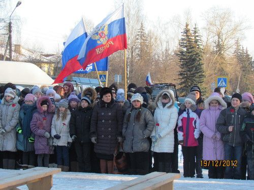
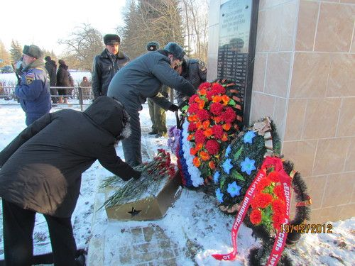
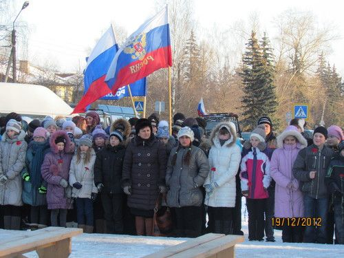
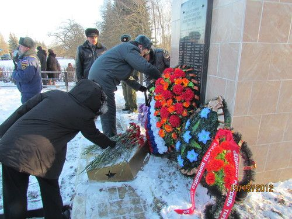
 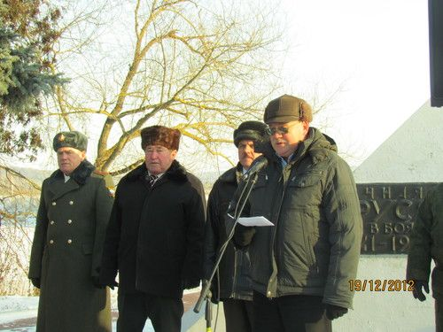
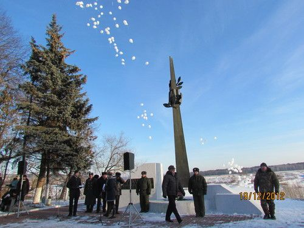
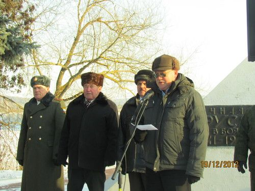
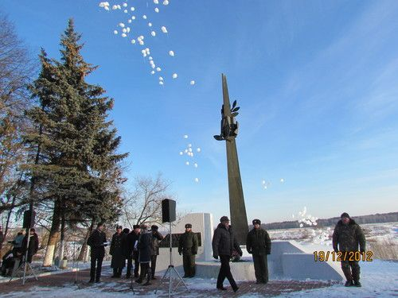
 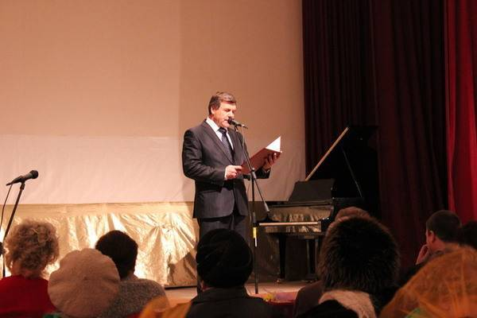
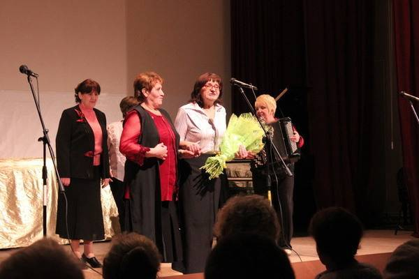
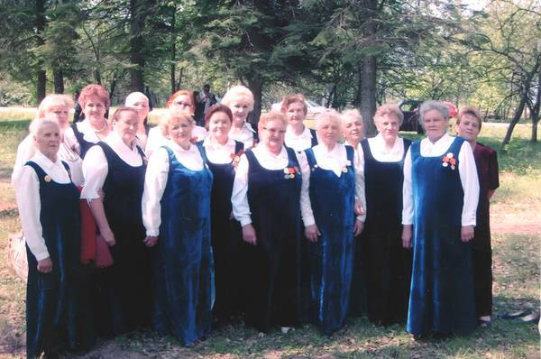
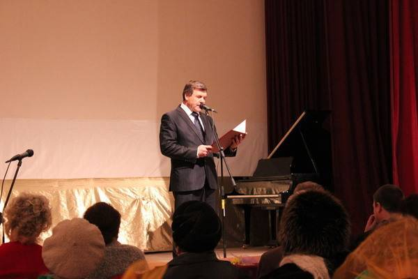
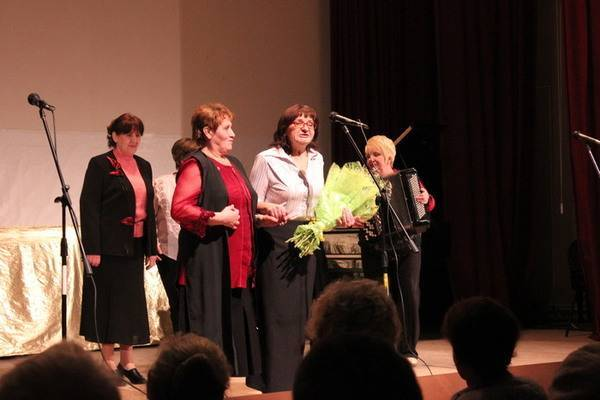
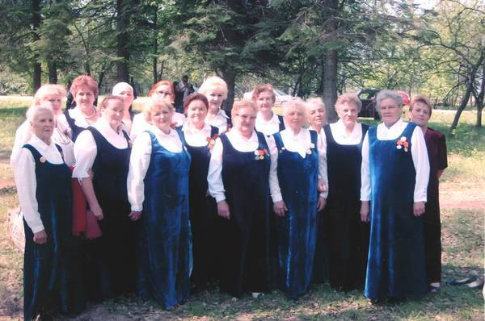


 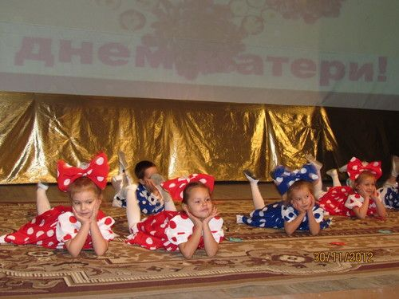
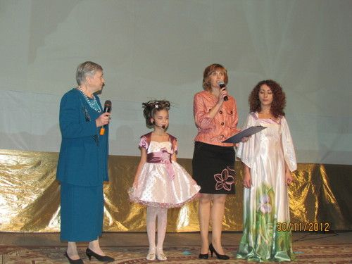
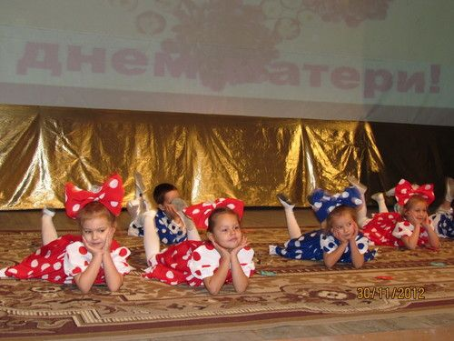
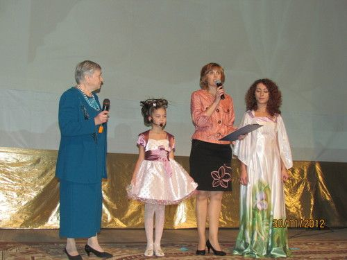
 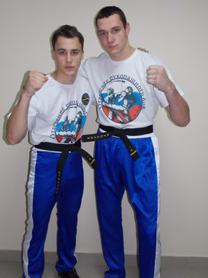
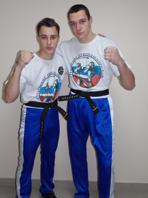
{kind=link}
{kind=link}
{kind=link}
{kind=link}
{kind=link}
{kind=link}
{kind=link}
{kind=link}
{kind=link}
{kind=link}
{kind=link}
{kind=link}
{kind=link}